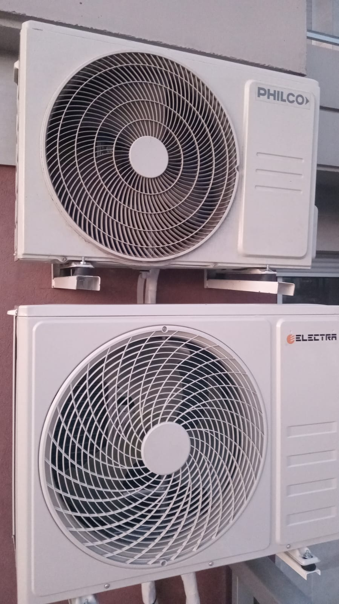
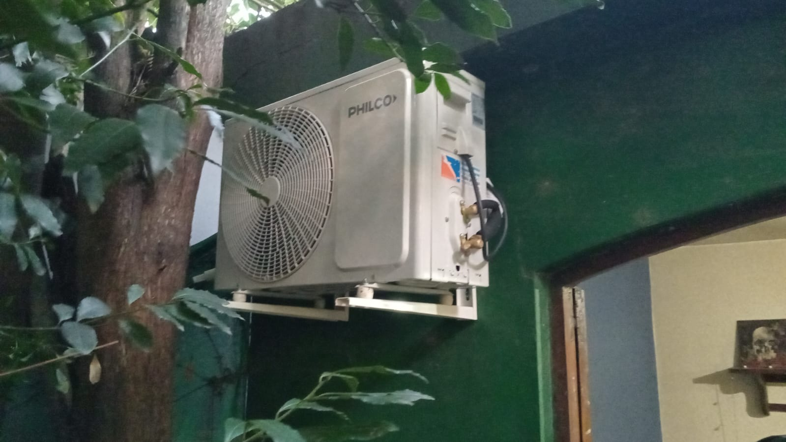
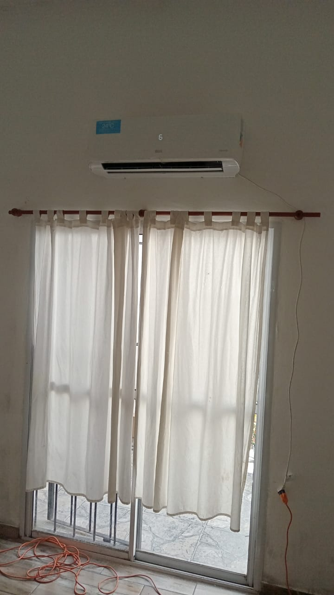
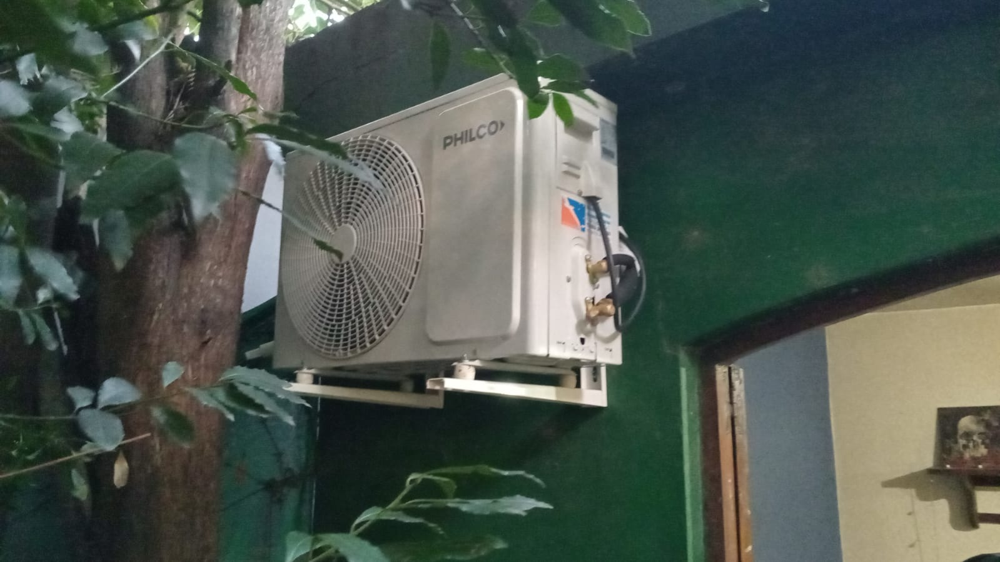
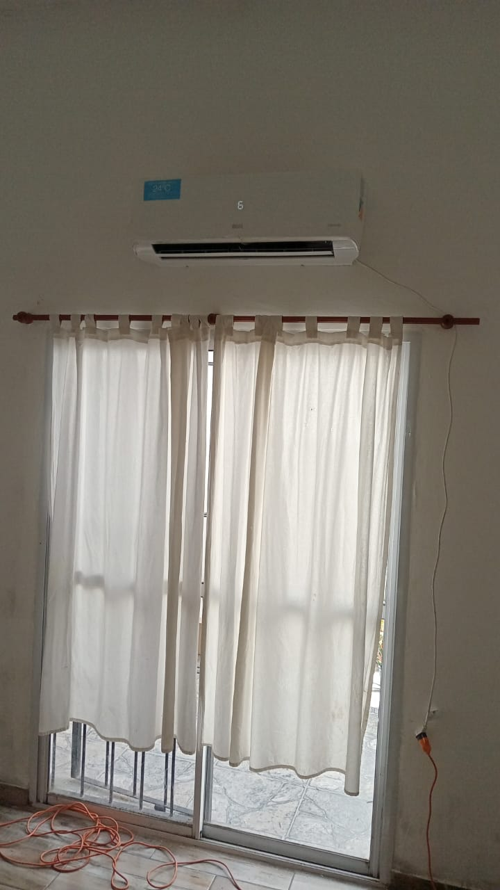

Trabajos realizados


 



Testimonios de clientes
“Muy profesional. Carlos instaló el aire en mi casa y quedó impecable. Todo limpio y funcionando perfecto.”
- Romina V., Castelar
- Romina V., Castelar
“Llamé a último momento y vino el mismo día. Trabajo rápido, prolijo y muy amable.”
- Daniel S., Ituzaingó
- Daniel S., Ituzaingó
“Recomiendo totalmente. Excelente atención y conocimiento técnico. Volvería a llamarlo.”
- Laura M., Morón
- Laura M., Morón
“Quedamos muy conformes. Nos explicó todo con paciencia y dejó el lugar mejor de lo que estaba.”
- Jorge y Miriam, Haedo
- Jorge y Miriam, Haedo
Contacto
📞 Teléfono / WhatsApp: Enviar mensaje
📧 Email: acostacarlosandres919@gmail.com
📍 Av. Roca 2463 – Cruce Castelar
📍 Zona de trabajo: Gran Buenos Aires
🕒 Horario: Lunes a Sábado de 08:00 a 18:00 hs